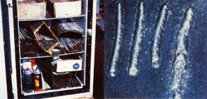

In his article "Weld It Yourself . . . and Make a Few Bucks to Boot" contributor Adrian B. DeBee gave readers an admirably thorough explanation of the basic tools and materials required to perform simple arc welding . . . and also suggested a number of ways to make some money welding and working with metal.
Those who read the article already know the what and why of welding; now let's get to the heart of the matter and find out how to arc weld. Yep, even though it's true that metal working tradespeople spend years honing their skills to a high degree of technical proficiency, it's just as true that you, as an everyday do-it-yourselfer, can pick up all the fundamental techniques for arc welding you're ever likely to need in just a couple of afternoons!
Let's assume that you've read Adrian's piece and followed his advice pretty much to the letter. You've bought yourself a reputable 230-volt, variable-amperage AC "buzz box" and read, then reread, the operator's manual . . . you've gathered together all the other necessities: a head shield (and goggles to wear underneath, to protect your eyes from sparks and chips even when your faceplate is raised), gauntlet gloves, a heavy, natural-fiber or leather jacket and cap, and rubber-soled boots . . . and you've prepared a clean, well-ventilated, dry work area equipped with 50-amp, 230-volt electrical service and at least a 10-pound, class ABC fire extinguisher.
While we're at it, let's say that you've also bought a supply of E6011 or E6013 all-purpose mild-steel electrodes; probably a few pounds each of 1/8"- and 5/32"diameter rods, for use with metal 1/8" thick or more, will be all you'll need for now. (It's important to prevent the rods from absorbing humidity, so keep them dry in a scrapped refrigerator fitted with a 150-watt bulb.)
Finally, we'll figure that-to round out your materials inventory-you've gone to a local metals supplier and bought a pile of flat steel scrap in varying thicknesses (anything from 1/8" to 3/8" is good for practice) for about a nickel a pound. (When you're done with the material, you should be able to sell it back to a salvage dealer to recover some of your cost.)
Position a piece of steel plate on your work surface and-since you'll be practicing with metal of around 1/4" in thickness-place a 1/8" rod in the grooves of the electrode holder, and set your machine's amperage to about 90 or 100. Connect the ground cable to the workpiece, but be sure it's positioned far enough away so that it won't interfere with your weld. Or, if the steel is on a conductive surface such as an angle iron table, simply clamp the wire close to the work. Then, keeping the electrode well away from any metal, turn the machine on.
Now, you're ready to strike the arc. Put your face shield down and warn others around you not to stare at the bright light no matter what. OK. Go ahead and start the arc by holding the rod about 20° from vertical and lightly scratching the tip of the electrode across about an inch of the area to be welded, drawing the rod toward you and then quickly raising its tip to about 1/4" above the metal.
What should happen is that-as a result of scratching the protective flux from the end of the electrode-current will flow through the rod, leap across the gap, and form an extremely hot (6,500°F) electric arc that melts both the end of the wand and the metal being welded. Because of the magnetic forces set in motion, the molten metal from the electrode travels across the arc and is deposited on the steel, mingling with that metal to form a weld.
Unfortunately, what will happen the first few times you try to strike an arc is what's called freezing: You won't lift the tip of the rod quite quickly enough, and the danged thing will stick and try to weld itself to the metal. A good strong twist should free the electrode . . . but if that doesn't work, turn the machine off, release the rod from its holder, and-after it has cooled somewhat-wiggle the stick free from the steel or knock it with a hammer, and start over.
It's likely that you will have to try again and again-freezing can be absolutely maddening for the beginner-but sooner or later you'll develop a smooth flick-of-the-wrist motion similar to striking a match, and you'll suddenly wonder why you ever found such a natural process difficult.
5. Electrode control is critical to a good weld. Eye-hand coordination is all- important because the length of the arc, as well as the speed at which the electrode travels, helps to determine the quality of the bead. 6. The completed weld shouls be evenly distributed, consistentm and even attractive. 7. Final grinding smoothes the metal for... 8. a perfect joint.
Once you've struck an arc-and are consistently able to hold the stick close enough to the metal's surface to maintain the circuit-the heat and flow of molten material will continue until the rod is used up. But before you can expect to put this action to work to join two pieces of metal, you must learn to control the flow-fusion process . . . to the point where you can produce a symmetrical, deeply penetrating weld.
Developing this bit of eye-hand coordination can be somewhat like learning to walk a tightrope on roller skates in a wind, because the quality of the bead you produce will depend on how well you balance [1] the amperage setting, [2] the length of arc, and [3] the speed at which you move the electrode (known as rate of travel).
The amperage setting required will depend mainly on the thickness and type of metal you want to weld, and on the size of the electrode used to do the job. (The operator's manual will likely include a table of recommended rod sizes for given metal thicknesses.) For now, though, let's stick with our 1/4" steel and 1/8" rod . . . in which case an amp setting of between 85 and 115 will be appropriate. (Start at a setting of 90 amps and adjust up or down as you observe the results of each bead.)
Now, strike an arc (your face mask is down, right?) and hold the electrode so that it leans toward you at an angle of 70° or 80° to the work. Starting at the edge farthest from you, draw the electrode back toward your body. Don't try any side-to-side movement for now . . . just pull the rod back in a straight line, evenly and steadily: not too fast (speed will cause you to produce a weld that's shallow and too narrow) and not too slow (the material will pile up and ripple excessively). By looking closely, you'll be able to see a crater forming in the metal at the end of the arc; try to keep the flow of material into the back of that cavity smooth and consistent.
Of course, while you're doing your best to control the rate of travel, another complication is taking place: Your welding rod is melting, and as a result, the length of your arc is getting longer. So while you're pulling the electrode toward you, you must also push the tip gradually downward to compensate for the rod's ever-decreasing length. As a general rule of thumb, try to keep arc distance equal to the diameter of the electrode being used. When the gap is correct, you'll hear a crackling sound . . . but when the arc is too long, you'll hear a hollow, blowing noise. So try to develop an ear, as well as an eye and a feel, for arc length.
Once you've completed a pass, let the fresh weld cool from red-hot to black, then use a chipping hammer to knock off the thin outer crust of slag. Underneath will be . . well, anything from a disappointing mass of pits and bubbles to an attractive, evenly distributed, deep, strong weld. The ideal bead is about 1-1/2 to 2 times as wide as the diameter of the electrode, and as long as the amount of rod used.
You can't expect to get a perfect specimen until you've had quite a bit of practice . . . so keep at it, experiment with amp settings and arc distances and travel speed-try your hand at moving the electrode from side to side in a tight zigzag or circular motion, too-and analyze each bead's appearance. Make an honest effort to be your own worst critic, and you'll be able to detect what you're doing wrong and correct it. Here are some things to look for:
Slag pockets: black, nonmetallic deposits in the weld. Try keeping the electrode movement steady . . . and hold the rod at an angle closer to perpendicular.
Undercutting: a shallow groove along one or both sides of a weld. This usually results from moving the electrode too fast. Slow down a little.
Spatter: droplets of metal around the weld. It isn't a serious problem, but-if adjusting amperage doesn't cure it-you may be holding the electrode too high.
Now that you're running beautiful welds consistently (well, almost), you're ready to start actually joining two pieces of metal. Again, we'll use 1/4" steel (be sure the edges to be fused are square) and 1/8" rod. If you happen to have two pieces that are more than 1/4" thick, bevel the top edges to about 45° to assure a deep, penetrating bond.
In any case, position the two sides so that they almost, but don't quite, touch (to allow for expansion) . . . and clamp them down securely. Because of the tremendous heat applied during welding-and the stresses created by the variations in temperature along the seam as the work progresses and later cools-the fresh weld and any adjacent metal are subject to distortion, possibly causing the joint to twist and crack the electrode material. Clamping the pieces is the easiest way to minimize the effects of these forces, though a "tack" weld-just a good, penetrating 1/4" dot of metal-placed at both ends of the joint, and used in addition to the clamps, will assure a positive bond.
Now, set your machine to about 115 amps and strike an arc. Start the weld at the top of the plates and draw it toward you . . . but this time, hold the rod nearly perpendicular and move the stick side to side in a tight "Z" pattern. If you're using an E6011 electrode-which penetrates a bit more deeply than does an E6013-you may also want to keep the arc length somewhat higher than the 1/8" rule of thumb. At the end of the run, raise the wand about 1/4" and hold it there briefly to allow the cavity in the final half-inch or so of the weld to fill with metal.
Let the work cool for a minute, then knock off the slag. Ideally, you should have a weld that penetrates into the seam, both horizontally and vertically, about 1/8". The surface of the fresh metal should be only slightly convex.
If you're satisfied with your results, smooth the work with a hand grinder to give it the appearance you'd want for, say, a woodstove. On the other hand, if the weld is poor, you may want to break it open-by twisting the pieces in a vise-to get a closer look at your effort. Is fusion complete all along the seam? Are there slag pockets? Keep a critical eye out for weaknesses in the work, and practice correcting them, even if it requires using a process of elimination to pinpoint the problem.
Now, you're ready to try to join a horizontal 1/4" steel plate to a vertical one, at a perpendicular. You can use clamps and a length of angle iron to keep the pieces positioned . . . or, better yet, simply lay a small tack weld on both sides of each end of the vertical plate, to hold the members in place.
Since we're only practicing tee-weld technique, 1/8" rod should be sufficient . . . but because more filler material is required here than for a simple butt joint, a 5/32" electrode (again, either E6011 or E6013) would be even better. When using the smaller wand, you'll need to slow your rate of travel in order to build up sufficient metal in the joint . . . but the decreased speed will cause increased heat, and therefore a greater possibility of metal distortion. So, if you have the larger-size electrode available, 5/32" is the way to go.
Set your machine for about 130 amps and strike an arc. Now, hold the rod so that it bisects the right angle formed by the two steel pieces (in other words, so that it's 45° from vertical), but leans at an angle of about 80° out from the corner where you intend to start the weld. Point the tip of the electrode in the direction of travel . . . aim the arc directly at the juncture of the two plates . . . and use a forward, oscillating, circular motion to bring the weld metal up and into the seam. Keep your work as even as possible, and be sure to build sufficient material all along both the vertical and horizontal planes.
When the weld has cooled, examine the seam. Chances are you'll be looking at a real mess after your first few attempts. (Undercutting is a common problem with tee welds . . . to correct it, try increasing or decreasing arc length, or reducing travel speed or amperage.) Be sure to break the weld with a hammer to get a closer look at the degree of penetration; if it isn't deep enough, try, try again. You'll get it right-eventually.
The answer to that question is yes and no. You will be able to handle most simple projects once you've mastered the fundamentals outlined here, but these few pages can't tell you everything there is to learn. There are dozens of types of welds, literally hundreds of kinds of electrodes, and scores of special procedures. What's more, your arc machine can be fitted to cut metal, thaw frozen pipes, and even braze and solder metal pipes, sheets, etc.
Learning to weld is like learning to do almost anything: The best way is to just do it. Concentrate on the basics until you really have them perfected . . . and if you know someone who welds, or have access to an adult education or technical school course of some kind, you're sure to benefit from face-to-face instruction.
The key is practice . . . and as soon as you've honed your skills, you can even get paid while you learn through experience . . . by doing basic repair work or by making simple, but salable, items. Either way, you can be making money as a bona fide welder!
EDITOR'S NOTE: Several manufacturers have put together some excellent publications that should be instructive to the novice and experienced welder alike. For a catalog of available books and manuals, with current prices, write to John Deere Service Publications, John Deere Rd., Moline, IL 61265. . . or to the Lincoln Electric Company, Book Division, 22801 St. Clair Ave., Cleveland, OH 44117-1199.
|
 1. A non-functional refrigerator fitted with a 150-watt bulb makes a low -humidity electrode storage bin. 2. These beads demonstrate, from left to right, the results of too-cold through too-hot fusion. The first example indicates low amperage; the last suggests excessive amperage and voltage. The third and best weld penetrated well and puddled rather than stacked up. |
3. Beveled joint edges improve the bond. 4.Clamps keep the work from distorting. |
5. Electrode control is critical to a good weld. Eye-hand coordination is all-important because the length of the arc, as well as the speed at which the electrode travels, helps to determine the quality of the bead. 6. The completed weld shouls be evenly distributed, consistentm and even attractive. 7. Final grinding smoothes the metal for... 8. a perfect joint. |